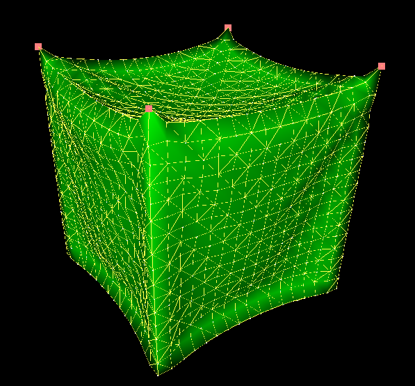

Tutorial Topology Quad2TriangleTopologicalMapping

Description
The aim of this tutorial is to show the interest of using a topological mapping between two 2D surface meshes. In this tutorial, a soft cube is represented, implying:
Under the first node representing the quad mesh, a second node is used to represent the triangle mesh.
This is not the same case as a topological mapping with different dimension. In this case, both topologies are 2D surfaces. Thus, the triangulation will split each quad into 2 adjacent triangles.
Triangle edges are represented in yellow in the simulation. Display the scene in wire frame to see the quads.
To create this mapping, the component Quad2TriangleTopologicalMapping is used. This component takes an input topology (Data Object1) which is the container of the "upper" topology (quad here) and has an output topology (Data Object2) which is the container of the above topology (triangle here).
In this simulation, no forcefield is linked to the quads, showing that the "above" topology can be used as a base for the simulation. (useful when a more precise topology is wanted)
Try to remove either the TriangularBendingSprings or TriangularFEMForceField component. The result will be a completely stretched tissue.

- A mesh loader to read mesh file.
- A mechanicalObject with geometry point positions.
- A mass for gravity and fixed points.
- A FEM forcefield to create interactions between points
- An ODE scheme and a linear solver to solve the system at each time step.
- Dynamic topological components.
- A visual model which reproduces the current model geometry thanks to the identity mapping.
Key points
Under the first node representing the quad mesh, a second node is used to represent the triangle mesh.
This is not the same case as a topological mapping with different dimension. In this case, both topologies are 2D surfaces. Thus, the triangulation will split each quad into 2 adjacent triangles.
Triangle edges are represented in yellow in the simulation. Display the scene in wire frame to see the quads.
To create this mapping, the component Quad2TriangleTopologicalMapping is used. This component takes an input topology (Data Object1) which is the container of the "upper" topology (quad here) and has an output topology (Data Object2) which is the container of the above topology (triangle here).
Results
In this simulation, no forcefield is linked to the quads, showing that the "above" topology can be used as a base for the simulation. (useful when a more precise topology is wanted)
Try to remove either the TriangularBendingSprings or TriangularFEMForceField component. The result will be a completely stretched tissue.
- Additional results
When deleting triangles, the topological mapping is updated, and so is the list of quads.